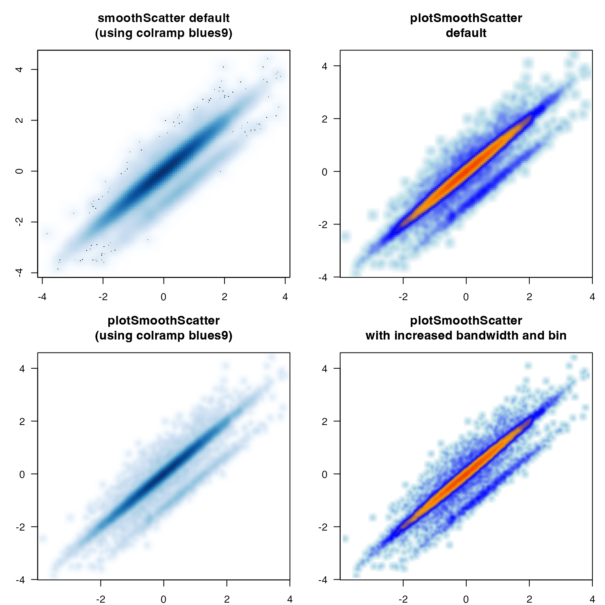

Display a color raster image
Usage
imageDefault(
x = seq_len(nrow(z) + 1) - 0.5,
y = seq_len(ncol(z) + 1) - 0.5,
z,
zlim = range(z[is.finite(z)]),
xlim = range(x),
ylim = range(y),
col = grDevices::hcl.colors(12, "YlOrRd", rev = TRUE),
add = FALSE,
xaxs = "i",
yaxs = "i",
xaxt = "n",
yaxt = "n",
xlab,
ylab,
breaks,
flip = c("none", "x", "y", "xy"),
oldstyle = TRUE,
useRaster = NULL,
fixRasterRatio = TRUE,
maxRatioFix = 10,
minRasterMultiple = NULL,
rasterTarget = 200,
interpolate = getOption("interpolate", TRUE),
verbose = FALSE,
...
)Arguments
- x
numericlocation of grid lines at which the intervals in z are measured.- y
numericlocation of grid lines at which the intervals in z are measured.- z
numericor logical matrix containing the values to be plotted, where NA values are allowed.- zlim
numericrange allowed for values in z.- xlim
numericrange to plot on the x-axis, by default the x range.- ylim
numericrange to plot on the y-axis, by default the y range.- col
charactervector of colors to be mapped to values in z.- add
logicalwhether to add to an existing active R plot, or create a new plot window.- xaxs
charactervalue compatible with graphics::par(xaxs), mainly useful for suppressing the x-axis, in order to produce a custom x-axis range, most useful to restrict the axis range expansion done by R by default.- yaxs
charactervalue compatible with graphics::par(yaxs), mainly useful for suppressing the y-axis, in order to produce a custom y-axis range, most useful to restrict the axis range expansion done by R by default.- xaxt
charactervalue compatible with graphics::par(xaxt), mainly useful for suppressing the x-axis, in order to produce a custom x-axis by other mechanisms, e.g. log-scaled x-axis tick marks.- yaxt
charactervalue compatible with graphics::par(yaxt), mainly useful for suppressing the y-axis, in order to produce a custom y-axis by other mechanisms, e.g. log-scaled y-axis tick marks.- xlab
characterlabel for the x-axis- ylab
characterlabel for the y-axis- breaks
numericvector of breakpoints for colors.- flip
characterstring, default "none", with optional axis flip:none: perform no axis flip
x: flip x-axis orientation
y: flip y-axis orientation
xy: flip both x- and y-axis orientation
- oldstyle
logicalwhether to delineate axis coordinates with an integer spacing for each column and row. Note: the only allowed parameter is TRUE, since useRaster=TRUE requires it. Therefore, this function for consistency will only output this format.- useRaster
logicalwhether to force raster image scaling, which is especially useful for large data matrices. In this case a bitmap raster image is created instead of polygons, then the bitmap is scaled to fit the plot space. Otherwise, individual polygons can be obscured on monitor screens, or may result in an extremely large file size when writing to vector image format such as PDF or SVG.- fixRasterRatio
logicalwhether to implement a simple workaround to the requirement for square pixels, in the event the x- and y-axis dimensions are not roughly equal.- maxRatioFix
integermaximum number of times any axis may be replicated to create a matrix of roughly equal x- and y-axis dimensions.- minRasterMultiple
integerminimum number of times the x- and y-axis will be duplicated, which is mostly useful when creating useRaster=TRUE for small matrix sizes, otherwise the result will be quite blurry. For example, minRasterMultiple=10 will duplicate each axis 10 times. Values are aplied to rows then columns. These values are automatically defined if minRasterMultiple is NULL and rasterTarget is not NULL.- rasterTarget
integernumber of cells below which cells are duplicated in order to maintain detail. The default 200 defines minRasterMultiple=c(1,1) if there are 200 rows and 200 columns, or minRasterMultiple=c(1,100) if there are 200 rows but 2 columns.- interpolate
logicalwhether to implement image interpolation, by default TRUE when useRaster=TRUE.- verbose
logicalwhether to enable verbose output, useful for debugging.- ...
Additional arguments are ignored.
Value
list composed of elements suitable to call
graphics::image.default().
Details
This function augments the image function, in
that it handles the useRaster parameter for non-symmetric data matrices,
in order to minimize the distortion from image-smoothing when pixels are
not square.
The function also by default creates the image map using coordinates where
each integer represents the center point of one column or row of data,
known in the default image function as oldstyle=TRUE.
For consistency, imageDefault will only accept oldstyle=TRUE.
See also
Other jam plot functions:
adjustAxisLabelMargins(),
coordPresets(),
decideMfrow(),
drawLabels(),
getPlotAspect(),
groupedAxis(),
imageByColors(),
minorLogTicksAxis(),
nullPlot(),
plotPolygonDensity(),
plotRidges(),
plotSmoothScatter(),
shadowText(),
shadowText_options(),
showColors(),
sqrtAxis(),
usrBox()
Examples
ps <- plotSmoothScatter(doTest=TRUE)
